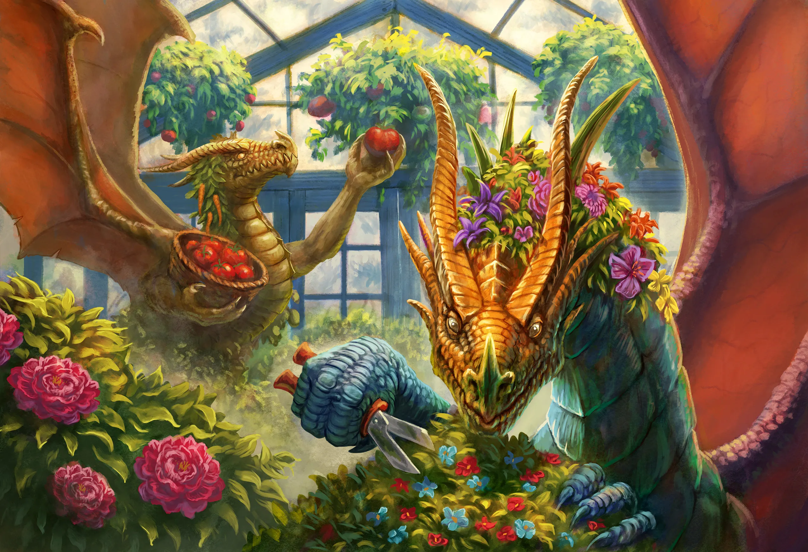
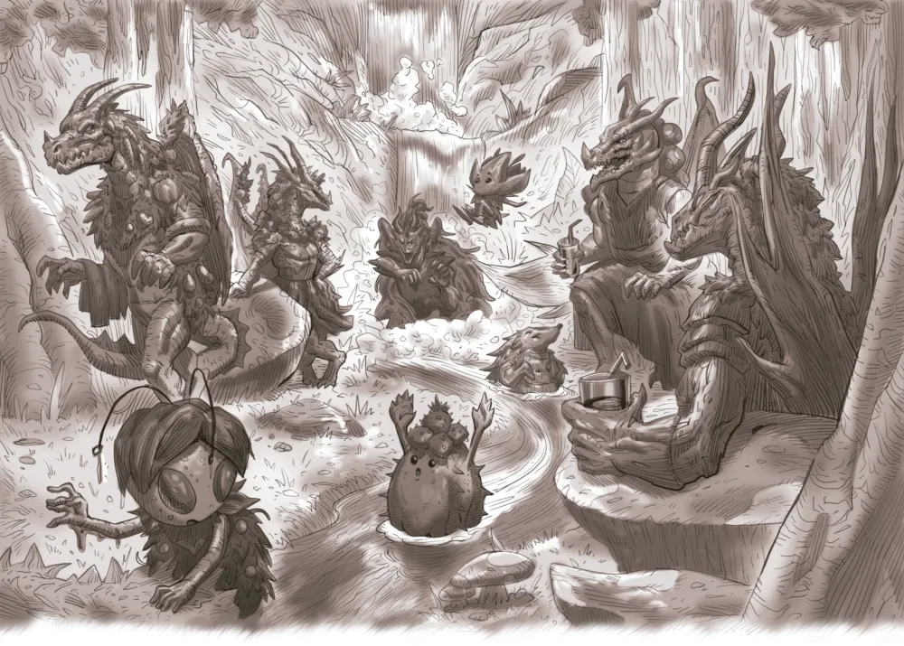
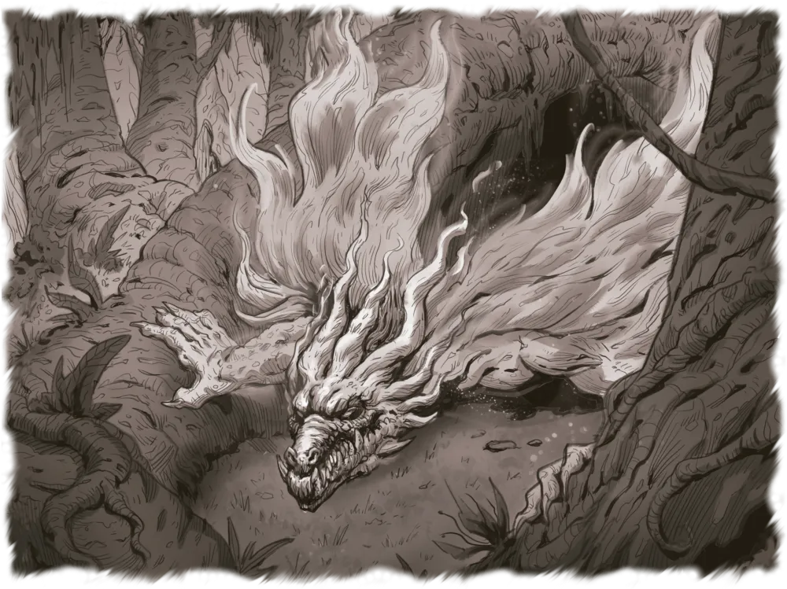
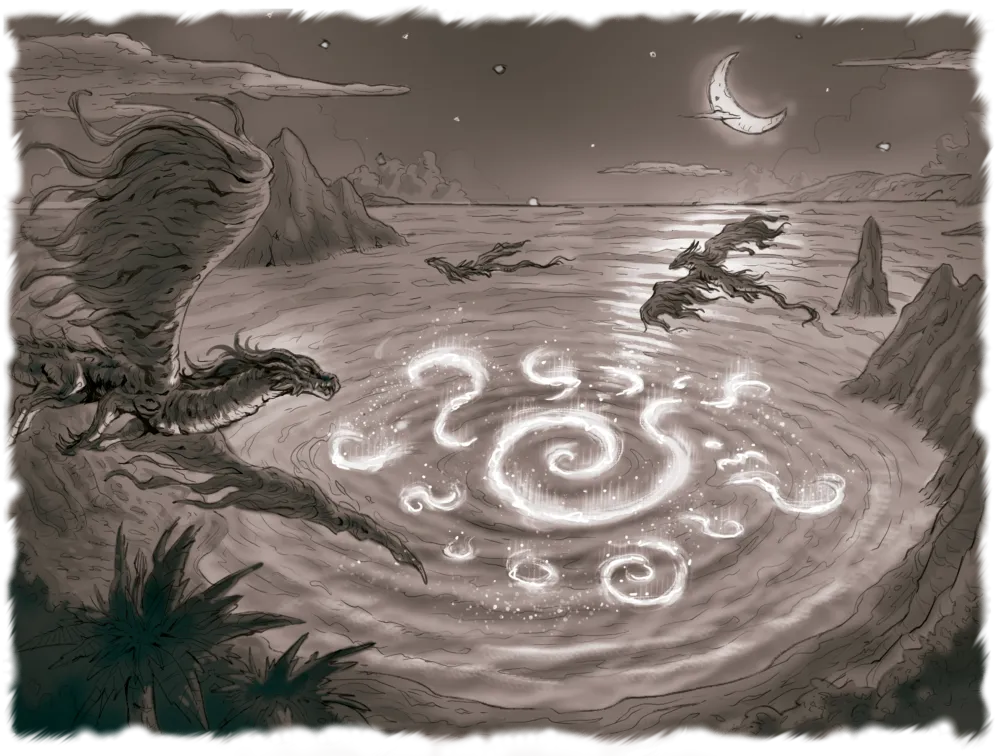
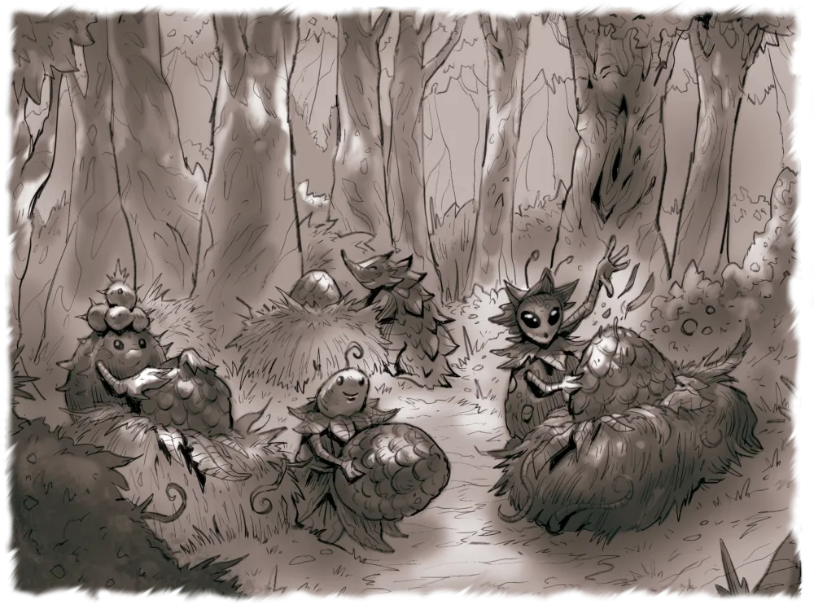
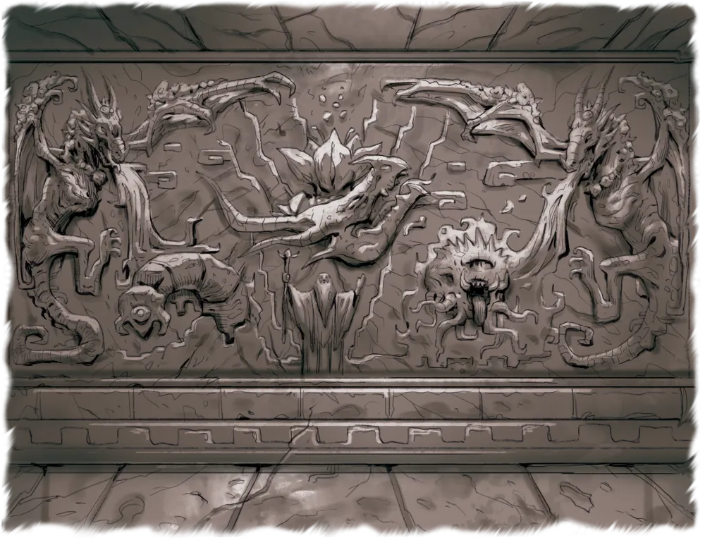
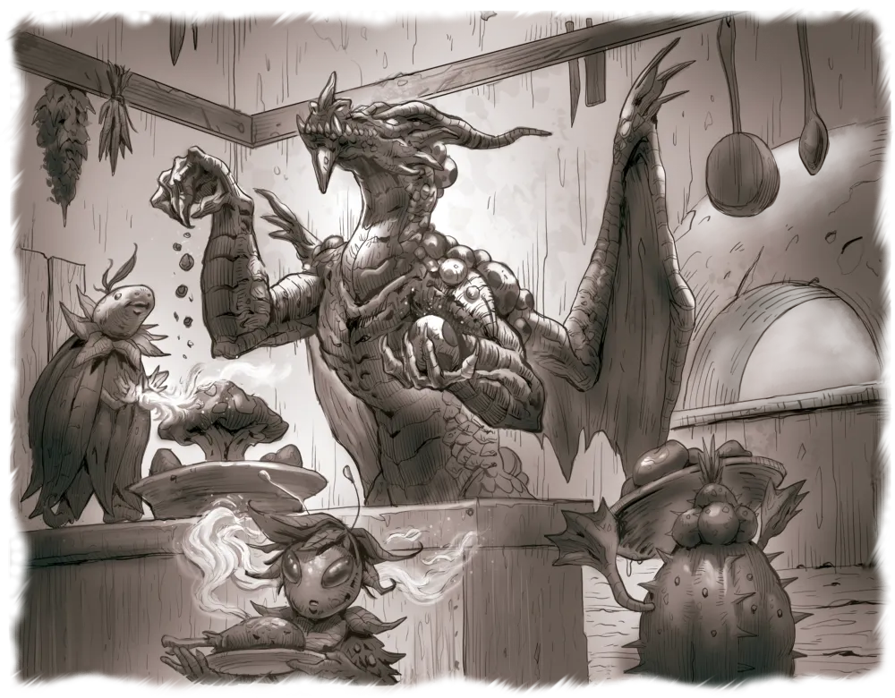
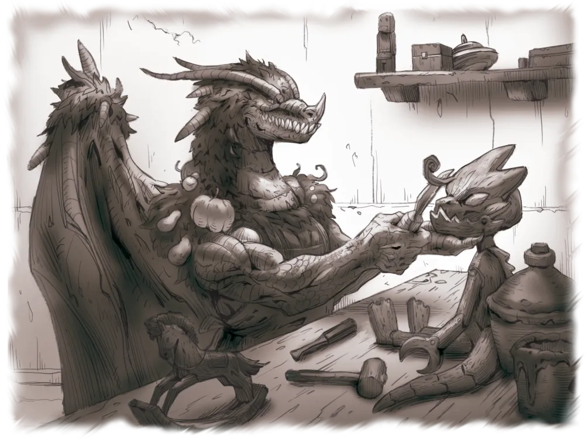
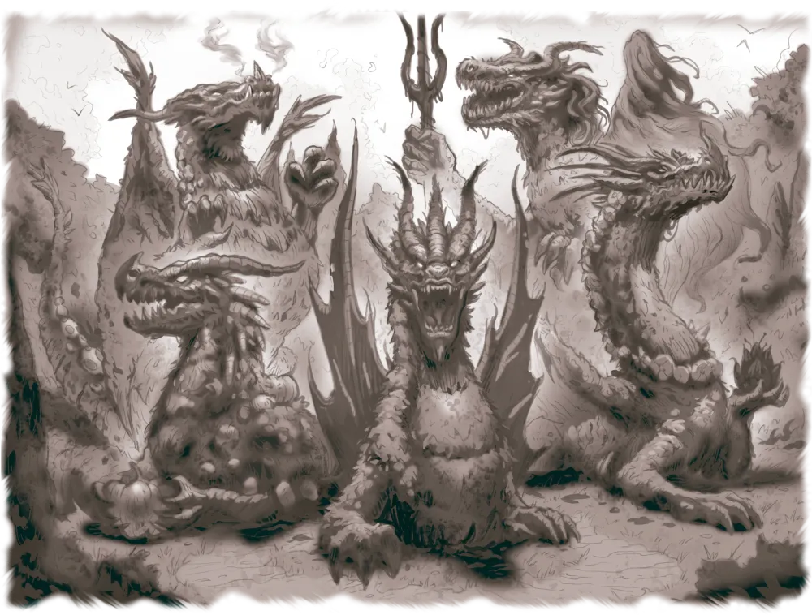

本章章节：莱希龙田野考察手记 ・ 莱希龙的使命 ・ 成年之礼 ・ 莱希龙巢穴 ・ 莱希龙与永恒之光 ・ 匠艺与庖厨巧思 ・ 死亡与葬仪习俗 ・ 我们能从中领悟什么？

有关莱希龙的历史文献匮乏至极，使得揭开它们真正起源的尝试成了一桩不可能完成的任务。请相信，我绝非轻率地写下这番话。我之所以能赢得如今无可争议的崇高声望，靠的可不是一遇上旁人眼中的“不可能”便轻易缴械投降。只叹那些未曾诉诸笔端的远古知识，总有种令人扼腕又恼火的倾向――一旦湮没，便永世难寻。说来或许令人失望，就连莱希龙自己似乎也不太清楚它们这一龙族支系究竟从何而来，而且大多数莱希龙甚至欣然拥抱自身根源的神秘色彩。
既然这桩历史悬案缺乏确凿定论，身为学者，我的职责便是将自己搜集拼凑出的零星证据娓娓道来，并以专家的视角奉上洞见与阐释。我的研究揭示了形形色色的假说与传说，其中有两种广受认可且颇具可信度的叙事脱颖而出。我冒昧将二者分别命名为“蜕变说”与“感召说”：

这一经典假说认为，最初的莱希龙原本属于其他种类的巨龙，但它们与自身所处的自然环境结下了格外深厚的羁绊。根据民间传说（以及常理推断），这些个体多半是森林龙，甚至可能是仙灵龙。不过归根结底，巨龙原本所属的种族或许远不如它与自然联结的深浅来得重要。在强大的原初施法者（传闻中往往是绿林翁）主持的仪式协助下，这些巨龙自愿转化了自身的生命本质。借由此举，它们肩负起大地守护者与庇护者的职责，从而化作了第一批莱希龙。
另一种较晚近的假说同样离不开德鲁伊或绿林翁的介入，但它否定了最初的莱希龙是由其他巨龙自愿担起职责转化而成的观点。鉴于莱希是它们血缘最近的近亲，感召说认为莱希龙的诞生很可能经历了相同的过程：从大自然的生命力中萃取出自然精魂――亦即“生机精魄”――再经由仪式赋予其物质躯壳。在少数听说过莱希龙的学术圈子里，这一说法颇具争议，而在莱希龙群体内部更是如此。毕竟，任何神话若是彻底剥夺了巨龙在自身起源问题上的自主意志，都免不了令许多巨龙心生不快。无论如何，倘若这一假说属实，且此类仪式有朝一日重现于世，那么一位意志坚定的原初施法者在理论上便能感召并具现出一头莱希龙。当然，迄今为止尚无任何先例得到过证实。
无论你选择相信哪一种起源神话，莱希龙与世界生命力之间与生俱来的紧密联系，以及它们同被称为古元教的元素哲学与宗教体系中“木元素”的深厚渊源，都是毋庸置疑的事实。莱希龙是大自然的化身，背负着神圣的职责，守护托付给它们的那条河流、那片林地或那方林间空地。尽管人们很容易想当然地认为它们的角色与普通莱希大同小异，但莱希龙践行自身使命时的投入程度要强烈、纯粹得多。在大多数情况下，这份使命便是它们自我认同的根本基石。
我曾长久思索，为何莱希龙会以如此倾尽一切的热忱投身于自身的目标；后来我发现，部分答案就藏在它们更强烈的个体意识之中。普通莱希源于纯粹不朽的生机精魄，只是暂时获赐物质形体；而莱希龙的生命却是有限的。它们会降生、成长，亦会衰老。尽管它们的寿命远超绝大多数凡俗生物，但终有一日也会逝去。与普通莱希不同，莱希龙唯有在有限的光阴里尽己所能，方能完成肩负的职责。
正如人们所能料想的那样，莱希龙的文化在很大程度上围绕着这种目标感以及每头莱希龙的“使命”运转。从地位层级、社会关系到风俗习惯，无一不受其深刻影响。然而，它们为履行这份对大自然及古元木元素的共同责任所采取的手段之丰富多样，着实令人叹为观止。每头莱希龙都可以自行选择最具成效、最能带来满足感的方式去完成使命，但鲜少有龙会对这份召唤置若罔闻。
事实上，我的考察与访谈揭示了许多既富创意又讲求务实的做法。有的莱希龙选择世代留守在社群栖居的田野或洞窟之中，有的则更喜欢终生游走于一处处未经玷污的净土之间；有的致力于抵御一切闯入者以捍卫领地，有的则会现身于半身人的农夫市集，向当地人推广敬畏自然的耕作方式。
若要举出这种无穷无尽的多样手段中最绝妙的例子，或许当属近十年来在莱希龙之间流传的一则关于“恸哭幽魂”的传闻。据说有一片阴森茂密、盛传闹鬼的森林，其真相其实是一头格外擅长诡计的乔木龙。她借着林木伪装藏身，发出令人毛骨悚然的凄厉嚎叫，以此打消邻近人类社区蚕食这片脆弱领地的念头。尽管学者天生的好奇心怂恿我深入一探究竟，但我毕竟是一位恪守操守的正直学者，因此决定不去拆穿这位同族非比寻常的手段。话虽如此，倘若传闻属实，我仍不禁暗自揣想：她所守护的事物，是否远不止表面看上去那么简单？

令我痛心的是，我在考察中发现，责任的分量并非均匀地落在每一头莱希龙肩上。这份职责究竟会被视作充实圆满的天命，还是令人窒息的沉重枷锁，往往取决于巨龙降生时的境遇。对于诞生在繁荣社群中、继承了丰饶田野与肥沃土壤的巨龙而言，不负众望并非难事；但对于独自守护一片垂死森林、日复一日在抗击迅速蔓延的寄生枯萎病中愈发精疲力竭的孤身守护者来说，绝望却是如影随形、足以压垮心智的威胁。
数百年的人生阅历告诉我，逆境方能锤炼出最坚韧的灵魂，而磨难正是对意志与决心的试炼。莱希龙会礼赞那些战胜深重苦难的坚毅同伴，尊奉它们为力量与奉献的楷模；而对于那些最终未能成功的同族，只要它们曾倾尽最后一丝气力奋战到底，社群也同样会予以宽宥。
然而，这份宽宥绝不会延伸到背弃使命的巨龙身上。在其他莱希龙眼中，抛下自身职责的决定无异于滔天背叛，一旦做出这种选择，便注定会遭到莱希龙社会彻头彻尾的唾弃与放逐。每当我在交谈中触及这一话题，换来的往往是压低声音的窃窃私语与局促不安的沉默，想来我是触碰到了某种极其敏感的禁忌。无论境况多么绝望，只要有个体放弃使命，都必将在社群中撕开一道裂痕。一旦发生这种事，整个社群便会将这位昔日挚友的名字从口中彻底抹去，并销毁一切相关记载，仿佛它从未存在过一般。
不过，多亏年轻巨龙的嘴更容易撬开，我还是为心中的部分疑问找到了答案。它们向我讲述了那些迷失方向、最终断绝了与古元的联结并因此日渐衰弱的巨龙的故事。有龙说，随着周遭大地的枯败，那些巨龙也只是悄然消逝；也有龙说，它们在失去与古元的联结后陷入了疯狂。但这些传说终究查无实据；尽管学者的天职要求我保持客观不偏的立场，我仍认为它们或许只是某种旨在劝诫后辈切勿弃责的宣传说辞。
在我的靛青群岛之行中，众多精彩见闻之一让我有幸亲眼目睹了莱希龙在履行使命时展现出的惊人创造力。每年两度，当地巨藻龙社群中身手最矫健的成员会在夜幕降临时贴着水面展翼滑翔。每当它们轻触水波，海岸特有的生物荧光浮游生物便会随之点亮，交织出令人目眩神迷的绮丽纹路。无论从水下仰望，还是从高空与俯瞰大海的悬崖上远眺，都能欣赏到这番奇景；社群中的其余成员便聚集在崖顶与天际，共同守望这场迷人的盛典。
这场盛事绝非仅仅为了审美之趣，它同样肩负着重要的生态职能。起初，巨藻龙是利用生物荧光为迁徙途中的水之古元兽指引航向。事实上，这项仪式在靛青群岛的生态系统中扮演着至关重要的沟通与协调枢纽角色。岁月流转间，巨藻龙不断打磨自身的技艺与艺术造诣，这一活动也随之演变升华。如今，它既是不可或缺的生态调节机制，也是一场礼赞水之古元的庆典――毕竟在巨藻龙心中，水之古元与木之古元同样受其虔诚尊崇。

莱希龙并不遵循寻常的家庭结构，而是习惯以社群共育的方式抚养幼崽。亲缘关系与血统出身只有间接关联：与普通莱希相似，莱希龙也是通过忠诚与共同经历来缔结家族羁绊的。这意味着一个莱希龙社群的成员或许大半都不是莱希龙，甚至有些根本不是龙类。
不出所料，除了巨龙之外，莱希龙聚落里最常见的生物便是莱希。这两个族裔从生命伊始便并肩同行。一枚莱希龙蛋孵化时会汇聚极为可观的原初能量，以至于周围往往无需举行任何仪式，便会有娇小的莱希自发萌生而出。按照习俗，大多数莱希龙并非由同族抚养长大，而是交由这些新生的莱希照料。在幼龙的早年岁月里，莱希扮演着看护者的角色，负责教导它们认识古元以及未来的职责。正因如此，哪怕面对那些跟在德鲁伊身边的娇小莱希，莱希龙也很难将其仅仅视作魔宠，反而常把它们看作德鲁伊的导师。
由于并非所有龙蛋都会在巨龙社群内部孵化，莱希作为导师与看护者的职责便显得尤为关键。依照古元的旨意，以及这门神秘古老宗教的信徒对其所作的诠释，有时远方某处更需要一位守护者降临。每当枝叶的低语传达出这般诉求，莱希龙便会挑选出一枚龙蛋，将其送往某片偏远而无人守护的森林或沼泽。这些新生的幼龙破壳时虽有莱希环绕身旁，却可能终生无缘得见自己出身的社群。受访者向我描述这一过程时，口吻近乎预言：据说被先知选中的龙蛋注定要背负一项艰巨而重大的使命。社群虽远隔千里，却依然对这些幼龙怀有崇高敬意，敬佩它们必将在孤独磨砺中淬炼出的坚韧品格。于是，为了这些“蒙受古元眷顾”的巨龙着想，社群断定斩断它们与同族的联系是一桩必要的牺牲。或许毫不令人意外的是，近几十年来，这一传统做法正受到越来越多的质疑。
无论被送往遥远荒僻之地，还是在盟友环绕下诞生，年幼的莱希龙终究都会在成长中洞悉自然万象，并领悟自身在其中的位置与职责。一旦它们准备好回应感召，并正式宣告自己将以何种方式履行使命，便不再被视作孩童。莱希龙的成年之礼并非以存世的年岁衡量，而是以全身心投身使命的那份决断为标志。

我有幸亲眼见证过一头莱希龙破壳诞生的时刻。对外人而言，这样的机缘可谓千载难逢；好在我向来与莱希一族颇为投缘――无论是作为自然化身的莱希精魂，还是与之血脉相连的这一巨龙家族，皆是如此。因此，它们破例准许我观礼这场新生，并将这段经历分享给更广阔的世界。
我的莱希龙朋友们领着我深入一片受严密庇护的红树林腹地。历经无数次迂回曲折与不时的攀爬之后，我终于抵达了孵化场，见到了那枚独处的龙蛋。各式各样的莱希龙齐聚于此，绝大多数都全神贯注地凝望着龙蛋，沉浸在喜悦的氛围之中，不过也有几头巨龙转向我所在的方向，向我投来轻轻颔首的善意致意。
羽毛、苔藓与盘根交织成柔软而又稳固的摇篮，将龙蛋四周的空间打理得无微不至。当龙蛋开始微微颤动时，一头巨龙低声哼起了一支无词的曲调，很快便有越来越多的声音汇入其中，交织成和谐的共鸣。忽然间，旁边一根树枝发出的吱呀轻响吸引了全场的目光――只见一只娇小的莱希刚刚从木质枝干中探出身来。
黄昏时分，伴随着白�q的啼鸣，蛋壳上浮现出第一道裂纹。此时已有数十只萤火虫汇聚在四周，为整个社群照亮了通往巢穴的小径。短短数秒之间，虫鸣与蛙声尽数敛息，仿佛整片红树林都屏住了呼吸。
龙蛋终于破开，一只娇小稚嫩、发出咕呱轻叫的雏龙在全族欢呼声中扭动着钻了出来。众龙纷纷上前轻蹭这新生的幼崽，将她在爪掌间温柔传递，一同迈步走向庆典会场。然而，我深受触动的心头却忽然涌起一丝沉重，学者应有的超然中立也在那一刻离我而去――我实在忍不住在脑海中想象：对于那些偶有不幸、未能在家族的怀抱与慰藉中破壳的孤蛋而言，这一幕又该是何等光景。
用“巢穴”这一概念来形容莱希龙的领地多少有些失准，因为它们更乐于分享栖息空间的倾向，与龙族的传统作风大相径庭。它们的社群可能会敞开怀抱接纳类人生物或精类生物，而且几乎总是与莱希以及形形色色的本土动物混居一处。显然，莱希龙很难理解“领地所有权”这一观念：在它们看来，一片土地永远只属于大地本身。尽管它们或许会将某个特定地点称作自己的家园，但它们才是通过守护此地安全而侍奉这片水土的仆人，绝非这片土地的主宰。正因如此，虽然“巢穴”一词并非贴切的描述，但莱希龙与栖身之地间那种深沉的羁绊，丝毫不逊色于任何其他巨龙与自身巢穴的联系。
莱希龙千姿百态的多样性，令研究者很难一言概括其栖息地的具体特征，不过我们依然能观察到某些天生的偏好。尽管规模最大的社群多聚集在沿海地带，但巨藻龙其实会栖息于任何水体之中，无论是海洋、沼泽、江河、湖泊还是池塘。丰收龙通常是与类人生物聚落最为友善的一支，也最常融入乡村农田，在当地居民眼中成为象征五谷丰登的灯塔。毒蕈龙则恰似蘑菇一般，有着冷不丁在出人意料之处冒出来的奇特习性。乔木龙通常可以栖居于任何树木之上，未必非得是茂密的森林与丛林不可。繁花龙则往往向往幽僻的丛林与独处的生活。归根结底，莱希龙的落脚之处往往取决于自身使命的需要――只要是有自然生机存在的地方，几乎都能见到它们的身影。
令人称奇的是，大地本身似乎也能感知到莱希龙的存在，并以生机予以回应。这些巨龙与木元素及古元之间与生俱来的联系，催生出了许多耐人寻味的环境效应。凡是有大量莱希龙聚居之地，庄稼收成便格外丰厚，土壤锁水能力更强，花期也会比往年更为持久。然而，其中最引人注目的现象当属莱希的自发涌现。尽管每逢龙蛋孵化时都必定会有莱希萌生，但仅仅因为附近聚集了多头莱希龙便引得莱希凭空诞生的情况也屡见不鲜。这两个物种之间永远维系着灵魂层面的共鸣，想来我也实在不该为此大惊小怪。
正如任何有自尊的研究者所深知的那样，研究一个社会却不审视其审美观念，注定是不完整的。与其他任何文化一样，莱希龙对“美”的定义也折射出它们的核心价值观。尽管巨藻龙或许会抱持更具个人色彩的审美观，但莱希龙最普遍的美学认知，无不凸显出它们对大自然最原始、最不受羁绊之形态的深深敬畏。
在莱希龙栖居之地，丰饶、堆叠，乃至杂乱、繁盛与疯长之中皆可寻见美的踪影。莱希龙认为，草木繁茂乃至略显混沌的肆意滋长，正是家园欣欣向荣的明证。各色植物品种交错丛生，营造出一种和谐的无序感；外来观察者或许会觉得杂乱刺眼、毫无章法，莱希龙却从中感到无比惬意与安心。久而久之，藤蔓、珊瑚、苔藓与野草便会毫无拘束地蔓延开来，覆满每一寸表面。就连繁花龙常选作巢穴的古代遗迹，也会被层层叠叠的厚重青苔彻底包裹，叫人几乎瞧不见底下的砖石。
莱希龙生活的方方面面――包括服饰与装扮配饰――都体现着这种独具一格的审美理念。它们会将织物染成万花筒般绚烂夺目的色彩，并将木制饰品与贵金属、宝石打造的珠宝层层叠戴在一起，对二者在世俗金钱价值上的悬殊毫不在意。它们几乎总是选用天然材料来制作衣物与器具，尤其是那些与自身使命息息相关的自然素材。
不过，这种鼓励草木肆意繁衍的作风，有时也会成为它们与邻近类人聚落爆发冲突的导火索。毕竟野草与失控疯长的藤蔓对当地房屋建筑与私人产业可算不上友好；再加上过度茂密的植被极易滋生昆虫与其他被许多人视为害虫的生物，不难理解为何莱希龙会与那些更具城镇生活思维的邻居产生摩擦。虽说莱希龙深谙在不铲除外来物种的前提下维持生态平衡之道，但症结在于，受限于自身独特的世界观，它们往往很少体谅类人聚落的处境。在它们眼中，这些城镇聚落无论过去、现在还是将来，都不过是暂时借给居民及其屋舍栖身的土地，终有一日要由大自然重新收回。
莱希龙并未形成一个高度统一、严密组织的社会，而是由星罗棋布的聚落与独居个体共同构成。尽管与我们龙族的大多数同胞相比，它们更倾向于群居生活，但仍有相当数量的莱希龙出于自愿或境遇而保持独居。在公社聚落之中，决策大多遵循民主商议的原则，不过许多成员也会信赖并追随群体中最具智慧或功绩最为卓著者的意见。而“功绩”的高低，几乎总是以这头莱希龙履行自然职责的成效来衡量。
无论是学者还是莱希龙自己都相信，一头莱希龙与自身使命及周围环境的契合程度，会渐渐反映在它的外在形体之上。全心投入使命的丰收龙身上结出的果实总是显得格外甘甜饱满，而充满热忱的繁花龙永远盛开着最艳丽夺目的花朵；反之，那些领地正遭受威胁的巨龙，外表往往也会显得黯淡枯萎。不过我个人倒是怀疑，这种关联的根源或许另有所在――比起直接的因果作用，巨龙的外貌说不定只是其内心状态与自信程度的映射，而这种心境又受到它们对自身成败认知的影响。
无论原因为何，莱希龙都极为重视自己的仪表外观。毕竟，作为与自然和谐共生的外在标志，这些特征直接关系到一头巨龙的声望。在某些聚落里，它们甚至扮演着身份象征的角色，仪表最为繁茂得体的巨龙往往拥有最大的话语权。而不同社群所推崇的体貌特征，也各自反映出当地独特的环境与价值取向。举例来说，靛青群岛紫罗兰林地中的乔木龙便不屑于翠绿繁茂的枝叶，反而推崇紫红色的叶片色调――因为那象征着毒性，进而代表着与当地环境的完美共生。

诸位在前面已经读到过我对缺乏确凿史料的抱怨；老实说，我真希望自己只是偶尔碰上过一两次这种难题。然而可悲的是，早在考察之初我便意识到，可靠文献的缺失将会成为一种令人沮丧且挥之不去的常态。
我曾在矗立的巨石表面或岩洞内壁上，见到过许多引人入胜、雕饰华美的远古壁画。画上描绘着奇异的场景，既有巨龙与类人身影，有时甚至还有连我都摸不着头脑的怪异生物。古人先将图案镌刻进石壁，再涂抹染料加以着色；当地居民每隔一段时间便会重新描摹上色，以免图案褪色消隐。然而任凭我如何追问，却始终没能从任何人口中问出半句清晰的解释，无人知晓这些壁画究竟记载着怎样的历史事件――它们的本义早已在岁月长河中彻底湮没。事实上，令我深感震惊的是，莱希龙居然完全不保留任何关于自身历史的文字记录。我自然不禁纳闷：这样一个族群，怎能任由珍贵的知识消逝在遗忘的深渊里？更糟糕的是，对于自身传承可能就此断绝的风险，它们竟显得毫不在乎。
随着调查深入，我发现这种行为背后其实另有缘由。莱希龙深信，莱希的本质核心中封存着整个社群全部的知识与智慧。当一只莱希脱离当前的物质躯壳、重归原初魔力的洪流时，它所知晓的一切也会随之并入其中；而其他莱希在具现成形时，总会携带着其中的一部分记忆与学识。这就解释了为何那些远离其他同族、由莱希抚养长大的莱希龙，不知怎的依然能学会自身使命与处境的基本常识。在某种意义上，这些看似不起眼的小生灵正是行走的活历史书。莱希龙只是单纯地相信：倘若某段知识当真重要，它终有一日会借由莱希之口再度浮现。
老实说，我对这种态度深感忧虑。
在我们龙族的许多其他支系中，永恒之光仪式往往饱受争议；但在莱希龙社群里，它却远没有那么敏感。虽然高傲之心遍布所有龙族社群，但绝大多数莱希龙并不会纯粹为了追逐力量本身而寻求永恒之光仪式。对一头莱希龙而言，永恒之光仪式无关身份认同，而只是达成目标的一种手段――不过是它践行自身使命、恪守对古元之承诺的另一条途径罢了。按照它们的逻辑，倘若一场仪式能赋予自己更快、更好地履行职责的力量，就不该让狭隘的虚荣心阻碍自己迈出这一步。同为一头永光龙，我对此深表赞同。
事实上，永恒之光正日益与莱希龙的成年礼紧密相连。正如我前文所述，莱希龙成年的标志，是就“如何以最佳方式完成自身使命”做出决断；而永恒之光就其本质而言，恰恰能为启动这一进程提供莫大的助力。倘若一头巨龙所守护的领地频繁遭受侵袭、亟需在短时间内迅速变强，它便可能选择接受永恒之光仪式，以争取最大的胜算。此外，我也曾遇到过一些天性更喜交际的莱希龙，它们做出这一决定是为了外出游历、传播理念，成为宣扬古元教或自身使命的使节。
当然，这并不是说举行永恒之光仪式已成普遍常态。尽管这场仪式在理论上有助于履行职责，但在大多数莱希龙眼中，冒这样的险并非必要之举。更何况，单凭力量并不能保证成功――智慧与勇气同样不可或缺，而仪式在这两方面可帮不上半点忙。但最重要的一点在于，莱希龙独特的生理构造及其与世界原初伟力的深厚联结，使得永恒之光仪式的附带效应――即几乎能治愈巨龙自身或另一名受体的任何伤病与沉疴――成了一次千载难逢、绝不该在尚无急需时轻易挥霍的宝贵机会。莱希龙在施行永恒之光仪式时有一项独门特性：它们能够以周围的自然环境作为仪式的导能媒介。借由此举，它们可以将仪式原本用于治愈自身或其他生物的力量，转而用来抚平周边天地遭受的严重创伤。谁又知道干旱或寄生疫病何时会突然降临呢？届时，永恒之光或许就是这头巨龙拯救自己立誓守护之土地的唯一生机。既然此生只能施行一次，这一决定自然不可轻率做出。
在极少数情况下，被职责压得喘不过气来的巨龙也可能会借由施行永恒之光仪式，彻底逃避自身的使命。不出所料，这种触犯禁忌的行径必然会招致其他莱希龙的唾弃与孤立。
虽说我有幸跻身于幸运儿之列，作为永光龙踏上的旅途最终通向了辉煌的成就，但并非所有经历过仪式的同族都能有此好运。在那些把永恒之光当作拯救领地之最后孤注一掷的莱希龙当中，有些终究只是延缓了不可避免的败局，到头来依然失去了领地，也失去了自己的使命。这些无家可归、再无容身之处的失意者心中那份凄凉与哀愁，实非言语所能形容。
莱希龙的文化督促每一名成员拼尽利齿与尖爪去完成职责，以至于大多数莱希龙都会在某种程度上将自我价值感寄托在这场奋斗之上。不仅如此，莱希龙与所处环境之间的羁绊本就是一种强烈而深刻的共生关系。由此不难想见，失去家园对它们而言，几乎无异于被生生剥去了自身的一部分。
在别无选择、唯有远走他乡之后，支撑它们四处漂泊的只剩下一丝微弱的希冀――渴望寻得救赎、新的使命，或是一处新的家园。尽管其他巨龙在听闻它们的遭遇后，或许会心生同情并热情相迎，但我可以想见，对于这些迷途失所的莱希龙而言，想要重新找回真正的归属感，注定是一段无比艰难的旅途。

在我的整趟考察中，唯一勉强称得上历史文献的资料，竟是寥寥数份潦草抄写在羊皮纸上、已有数百年历史的古老食谱。这一点足以充分说明烹饪与手工艺在莱希龙文化――尤其是聚落生活――中占据着何等至高无上的地位。莱希龙善于就地取材，利用手头可得的各类植物调制香水、药膏、美酒、糖果、果酱，以及数不胜数的其他珍馐佳品。
耐人寻味的是，尽管许多莱希龙天性合群，这门手艺却是关乎个人尊严的头等大事。平日里处处以社群为重的个体，一旦较起厨艺高低来，竟也会生出争强好胜之心，这番景象在我看来实在颇为有趣。推陈出新是一场争先恐后的竞赛，嫉妒艳羡是司空见惯的反应，而每头巨龙最引以为傲的招牌配方更是绝不外传的最高机密。为了应对围绕这些习俗衍生出的繁复社交礼仪，我不得不重新学习一套全新的规矩；唯有时刻保持警觉、得体与谦逊，方能避免无意间得罪任何一方。当然，这几项本领向来都是我的拿手好戏。
若说莱希龙之间的这套手工与烹饪风尚蕴含着深厚的政治意味，我认为绝不算夸大其词。莱希龙花费无数个日夜精雕细琢自己的手艺，可不是为了让心血结晶在角落里蒙尘。最顶尖的杰作一经问世，等待它们的便是一套热烈而又错综复杂的赠礼文化。经常与莱希龙共享领地的仙境居民，或许正是催生这套习俗的幕后推手之一。礼物的往来绝非单纯的社交客套，而是一张由人情债、恩惠、盟约与权力博弈交织而成的繁复网络。所幸我身为学者数百年来积累的深厚阅历――更不必说近期在仙境游历的见闻――赋予了我足够的文化洞察力，让我得以免遭失礼出丑的尴尬。
为了免除诸位未来派出的使节在不知不觉间背上一身人情债的倒霉惊吓，我将竭尽所能，就这套赠礼习俗提供几条行事准则：

在考察旅途的一小段日子里，我曾与一支自号“授粉者”的莱希龙商队结伴同行。我与商队首领――一头乔木龙――进行了多次促膝长谈，从中摸清了这个雅号背后的来由。
数十载充满灵感的钻研磨砺，将她造就成了一位专精儿童玩具制作的巧手匠师。她自幼便痴迷于木雕技艺，并认定自己的作品完全可以成为传播欢乐、引导世人珍视自然之美的绝佳媒介。当她踏上旅途之后，越来越多的巨龙与志同道合的工匠纷纷加入她的行列。每位成员心中燃烧的热爱各有不同，却都怀揣着同一个理想。如今，他们结伴游走于世界各地的市集，售卖饮食、药剂、香料乃至各类奇巧手作。借由此举，他们向各地民众展示：只要对身边的自然环境多一分理解与敬畏，便能收获何等丰厚的馈赠。诚如她本人所创的妙语，这让他们成了“思想的授粉者”。
更何况，又有谁能抵挡住诱惑，不想凑上前听听他们的旅途奇谭呢？商队的每一辆大篷车与货车上都装点着五彩斑斓的旌旗与蜿蜒攀附的藤蔓，或是捆扎着一盆盆芬芳四溢的香草与鲜花。整支商队宛如一座生机盎然的移动展馆，走到哪里便将大自然的奇观展现到哪里。
与能够无休止转生重塑的普通莱希不同，莱希龙深知自己一旦逝去，便再也不会获赐物质躯体。但这并不意味着它们将死亡视为绝对的终结。在咽下最后一口气后，逝者的部分躯体、生命力、精魂与意识将会汇入古元的原初伟力之中，融入维系自然天地运转不息的生死轮回。莱希龙会为挚友的离世深切哀悼，却不举行繁文缛节的葬礼：在它们眼中，死亡本是自然演化的必经过程，理当坦然优雅地接纳。躯壳只是天地暂时借予它们寄居的容器，在生生不息的万物更迭中，它终将寻得全新的使命。
一位无忧无虑的旅人完全可能在田野间漫步而过，却浑然不知自己刚刚踏过了一头巨龙的坟茔――因为莱希龙安葬逝者时从不竖立墓碑。取而代之的是，它们会挑选一种具有象征意义或是逝者生前最喜爱的植物，将其栽种在亡龙长眠的土壤之上。莱希龙相信，这株植物的枝叶与藤蔓能够充当亡龙灵魂的寄托之器与锚点。这种充满诗意的做法并非多个社群不约而同的巧合，而是世代相传的古老传统。照料这些繁花盛放的墓冢是整个社群共同的职责，而大多数巨龙在生前便会告知挚亲自己钟爱的种子或孢子。墓上植物的选择几乎总是契合逝者的生平与性情；倘若伴侣先一步离世，在世的巨龙往往会从亡侣墓前采集种子留存，只待自己百年之后种下，好让两株草木在坟前相拥交缠。
按照莱希龙的民间忌讳，倘若在巨龙的精魂来得及重归古元之前，墓上的植物便遭人拔除或摧毁，逝者的意识便会就此永世迷失、灰飞烟灭。不消说，这意味着在莱希龙文化中，明知某株植物生于墓冢之上却蓄意加以损毁，乃是十恶不赦的重罪。
这套信仰也常常令独居的莱希龙忧心忡忡：待到自己大限将至，又有谁来护送灵魂安然重归自然呢？倘若它们不能或不愿重返社群，便只能赌上一把信念――相信当地的草木会在自己咽气后照拂遗骸，相信风中的种子自会寻着门径落入白骨之间。

在数百年实地游历与考察的生涯中，我曾见过不少奇特迷人的场所，却鲜少有哪里像“绿雕墓园”这般既奇诡又肃穆。我曾漫步于一座遍布精雕细琢之植物塑像的庭园中，每一尊绿雕都修剪成不同莱希龙的身姿样貌。我在园中结识了此地的守护者兼园丁――一头繁花龙；他告诉我，这里的每一尊植物雕塑都标记着一头逝去巨龙的坟墓。这类零星散布于各地的庭园由繁花与枝叶精巧雕琢而成，充当着庄严肃穆的纪念陵园。传说在面临灭顶之灾的危急关头，园中的绿雕甚至会活化苏醒，奋起保卫整座墓园。
莱希龙的葬仪习俗还催生出了一种名为“灵木林苑”的纪念圣地，有时可在规模较大的莱希龙社群中见到。它们看上去是由树木、藤蔓、果实、菌菇与繁花彼此盘根错节、交织共生的繁茂林丛。需要特别指出的是，这些地方绝非单纯的合葬墓穴。事实上，有一次我曾惊讶地得知，眼前的这座纪念林苑底下居然没有埋葬任何一头巨龙――整片林苑完全是由从山谷各处墓冢采集而来的扦插枝条与种子培育而成的。
灵木林苑既是社群集体认同的象征，也是一座活生生、时刻生长变化的追思丰碑。林苑中生长的植物种类主要取决于当地生态群落与原生植被，但来自异域的珍奇品种也并不罕见――它们多半代表着那些远道而来、最终在此地寻得家人的异乡巨龙。灵木林苑同样见证着莱希龙的多样性：不出所料，世上绝没有两座完全相同的林苑。我见过的林苑中，有的规划得井井有条、一丝不苟，有的则是肆意疯长、混沌交织的草木丛林。而在巨藻龙群体中，与之相仿的对等物则是“灵礁”。灵礁往往呈现出极具巧思的艺术形态，有时是覆满绚丽海藻的水下壁画，有时则是在一块奇形怪状的巨岩上蔓延生长的壮观珊瑚群。
传闻世间存在着一座规模空前宏大且历史最为悠久的灵木林苑，其间安葬着多位最受尊崇的莱希龙先贤。据说那片圣林广袤无边，早已成为举足轻重的朝圣圣地。许多巨龙不远万里前去朝拜，随身携带着挚爱墓冢植物的种子、插条或分株，以此缅怀故人；也有些年迈的巨龙选择在那里度过生命最后的时光，由驻守圣地的繁花龙守护者悉心照料。只可惜，由于守护者唯恐圣地惨遭亵渎而将其方位守口如瓶，我所能记录下的也只有道听途说的二手传闻。想来，我倒也完全能够理解它们的谨慎。
尽管莱希龙的起源或许扑朔迷离，但它们的当下却清晰无比：它们一生都围绕着自己与周遭世界、世间生灵以及天地魔力的联结而活。对于群居在村落或菌落中的丰收龙与毒蕈龙而言，对凡俗生灵的眷恋或许表现得最为直观；对于镇守林间圣地的乔木龙而言，守护自然的使命最为鲜明纯粹；但我们同样能从巨藻龙对艺术与竞争的痴迷，以及繁花龙对仪式的钻研和与其他施法者的往来之中，窥见同一份联结的印记。
关于这一课题，是否还有更多未知等待发掘？答案是肯定的！即便像诸位敬爱的笔者这般博学精深的学者，终究也只是一头巨龙，而一天之中的时辰终归有限。尽管如此，我已经发掘出了若干值得我们深思的事实，同时也揭示了诸多全新的谜团，留待后来的研究者继续探寻。亲爱的读者，倘若你有志于亲自踏上这条求索之路，站在包括鄙人在内的历代思想巨擘的肩膀之上，你定能超越这部神圣手稿所收录的疆界。
对于那些有意追随我爪印的后辈学者，有一项后续课题我尤为推荐：不妨深入探究自然精魂那神秘莫测的生命洪流――亦即具现化身为莱希的“生机精魄”――去查明它们究竟是否真如传言所说，乃是承载被遗忘往昔的活体史册。
单从表面来看，我个人其实并不太信服这一说法。毕竟就连莱希自己在重归自然之后，也会遗忘具现为凡俗形体时的生前记忆，哪怕同一缕自然碎片日后再度化生为一只全新的莱希亦不例外。从这个角度讲，指望用这种方式储存信息似乎纯属徒劳；生命力与心智本就是神秘学上的两极对立之物，此举简直无异于妄图用冰柱点燃篝火。
然而……这却偏偏正是莱希龙深信不疑的真理！不仅如此，它们手中似乎还握有一些零星的佐证来支撑这份信念。倘若我们顺着这些线索回溯，便会发现它们贯穿了一头莱希龙从破壳降生、走完一生直至死后归宿的全部历程；毫无疑问，莱希龙自身对此坚信不移。为了揭开这个世界的全部奥秘，我们绝不能让先入为主的成见蒙蔽双眼、将种种可能性拒之门外――无论那些可能性初看之下显得多么匪夷所思。诚然令人不安，却又引人入胜。最亲爱的读者啊，余下的篇章就交到你的手中了。去探索莱希龙的世界吧，为我开创的基业添砖加瓦！
――永光贤者卡利赞德雷克斯